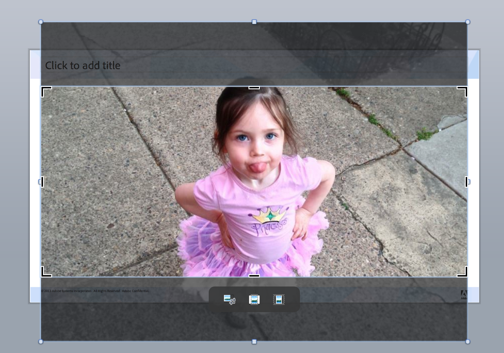
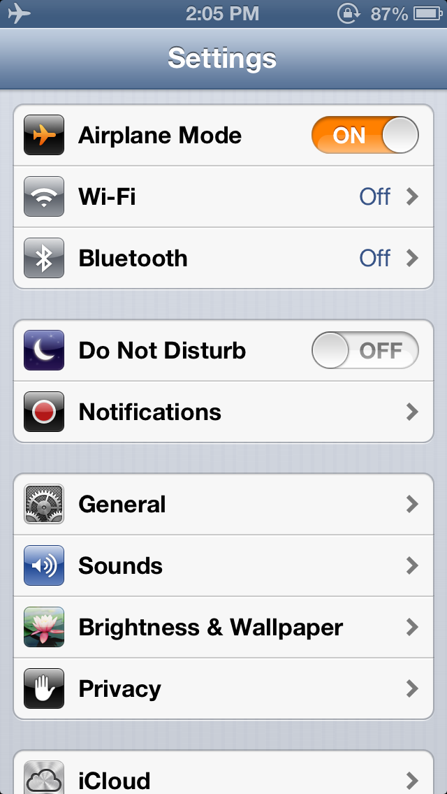

Practical CSS
Terry Ryan | Creative Cloud Evangelist

Important Ideas
- Avoid
- Consider other options before choosing.
- Does not mean "never"
- Prefer
- Try to settle on solutions that include.
- Does not mean "always"
Avoid adding extra HTML
Prefer using CSS for all display
Columns
Flexible Grid
Col1 Col1 Col1 Col1 Col1 Col1 Col1 Col1 Col1
Col2 Col2 Col2 Col2 Col2 Col2 Col2 Col2 Col2
Col3 Col3 Col3 Col3 Col3 Col3 Col3 Col3 Col3
<div class="col33 a">
Col1 Col1 Col1 Col1
</div>
<div class="col33 b">
Col2 Col2 Col2 Col2
</div>
<div class="col33 c">
Col3 Col3 Col3 Col3
</div>
.col33{
width: 33%;
height: 200px;
float: left;
}
Col1 Col1 Col1 Col1 Col1 Col1 Col1 Col1 Col1
Col2 Col2 Col2 Col2 Col2 Col2 Col2 Col2 Col2
Col3 Col3 Col3 Col3 Col3 Col3 Col3 Col3 Col3
<div class="col33 a">
Col1 Col1 Col1 Col1
</div>
<div class="col33 b">
Col2 Col2 Col2 Col2
</div>
<div class="col33 c">
Col3 Col3 Col3 Col3
</div>
.col33{
width: 33%;
height: 200px;
float: left;
padding: 0 10px;
}
Col1 Col1 Col1 Col1 Col1 Col1 Col1 Col1 Col1
Col2 Col2 Col2 Col2 Col2 Col2 Col2 Col2 Col2
Col3 Col3 Col3 Col3 Col3 Col3 Col3 Col3 Col3
Col1 Col1 Col1 Col1 Col1 Col1 Col1 Col1 Col1
Col2 Col2 Col2 Col2 Col2 Col2 Col2 Col2 Col2
Col3 Col3 Col3 Col3 Col3 Col3 Col3 Col3 Col3
.borderbox{
-moz-box-sizing: border-box;
-webkit-box-sizing: border-box;
box-sizing: border-box;
}

Col1 Col1 Col1 Col1 Col1 Col1 Col1 Col1 Col1
Col2 Col2 Col2 Col2 Col2 Col2 Col2 Col2 Col2
Col3 Col3 Col3 Col3 Col3 Col3 Col3 Col3 Col3
<div>
<div class="col33 a" />
<div class="col33 b" />
<div class="col33 c" />
<br style="clear:both;" />
</div>
Col1 Col1 Col1 Col1 Col1 Col1 Col1 Col1 Col1
Col2 Col2 Col2 Col2 Col2 Col2 Col2 Col2 Col2
Col3 Col3 Col3 Col3 Col3 Col3 Col3 Col3 Col3
<div class="clearfix">
<div class="col33 a" />
<div class="col33 b" />
<div class="col33 c" />
</div>
.clearfix:after{
content: "";
display: table;
clear: both;
}
Col1 Col1 Col1 Col1 Col1 Col1 Col1 Col1 Col1
Col2 Col2 Col2 Col2 Col2 Col2 Col2 Col2 Col2
Col3 Col3 Col3 Col3 Col3 Col3 Col3 Col3 Col3
Concepts
Powerpoint


Psuedo Elements
<div class="psuedotest">
<p>PithyQuote</p>
</div>
Pithy Quote
<div class="psuedotest">
<p>PithyQuote</p>
</div>
.psuedotest:before,
.psuedotest:after{
border: 1px solid green;
display: inline-block;
content: "#";
}
Pithy Quote
Character Entities
HTML Entities
Ampersand
| HTML | & |
|---|---|
| HTML(Numeric) | & |
| CSS | content:"\0026"; |
| Javascript | alert("\46") |
Why are none of the numbers the same?
Standards writers hate you.

Static
<div>
<p>PithyQuote</p>
</div>
position: static;
top:30px;
Pithy Quote
Relative
<div>
<p>PithyQuote</p>
</div>
position: relative;
top:30px;
Pithy Quote
Absolute
<div>
<p>PithyQuote</p>
</div>
position: absolute;
top:130px;
Pithy Quote
Fixed
<div>
<p>PithyQuote</p>
</div>
position: fixed;
top:0;
right: 0;
Pithy Quote
Transforms
Rotate
<div>
<p>PithyQuote</p>
</div>
-webkit-transform:rotate(10deg);
-moz-transform:rotate(10deg);
-o-transform:rotate(10deg);
transform:rotate(10deg);
Pithy Quote
Skew
<div>
<p>PithyQuote</p>
</div>
-webkit-transform:skew(35deg);
-moz-transform:skew(35deg);
-o-transform:skew(35deg);
transform:skew(35deg);
Pithy Quote
Multiple
<div>
<p>PithyQuote</p>
</div>
transform:
skew(30deg)
scale(1.1,1.1)
rotate(40deg)
translate(10px, 20px);
Pithy Quote
Options
matrix() matrix3d()
translate() translateX() translateY() translateZ() translate3d()
scale() scaleX() scaleY() scaleZ() scale3d()
rotate() rotateX() rotateY() rotateZ() rotate3d()
skewX() skewY()
perspective()
Filters
Base
<img src="locationmarker.svg" />
Sepia
<img src="locationmarker.svg" />
-webkit-filter:sepia(100%);
Saturate
<img src="locationmarker.svg" />
-webkit-filter:saturate(100);
Box Shadow
<img src="locationmarker.svg" />
box-shadow: 3px 3px 5px #000;
Drop Shadow
<img src="locationmarker.svg" />
-webkit-filter:
drop-shadow(3px 3px 10px #000);
Options
grayscale
sepia
saturate
hue-rotate
invert
opacity
brightness
contrast
blur
drop-shadow
Concepts


Concepts
iOS

CSS Patterns
<div class="pattern">
<p>PithyQuote</p>
</div>
background: #F00;
Pithy Quote
<div class="pattern">
<p>PithyQuote</p>
</div>
background:
linear-gradient(#0FF,#F0F);
Pithy Quote
<div class="pattern">
<p>PithyQuote</p>
</div>
background:
linear-gradient(#0FF,#F0F);
background-size:5px 5px;
Pithy Quote
<div class="pattern">
<p>PithyQuote</p>
</div>
background:
linear-gradient(#0FF 10px,#F0F);
background-size:12px 12px;
Pithy Quote
CSS Transitions
<script>
function toggleOpacity(){
Set to 1 or 0
}
function toggleMargin(){
Set to 140 or 0
}
</script>
<p id="trans1">Pithy Quote</p>
<button onclick="toggleOpacity()">
Opacity
</button>
<button onclick="toggleMargin()">
Margin
</button>
Pithy Quote
transition: all 1s ease-in-out;
<p id="trans1">Pithy Quote</p>
<button onclick="toggleOpacity()">
Opacity
</button>
<button onclick="toggleMargin()">
Margin
</button>
Pithy Quote
Concepts
Conclusions
Why?


Prepare for the unknown
Questions?
Source, Presentation & References:
Preso also availalble at:
Contact Me?